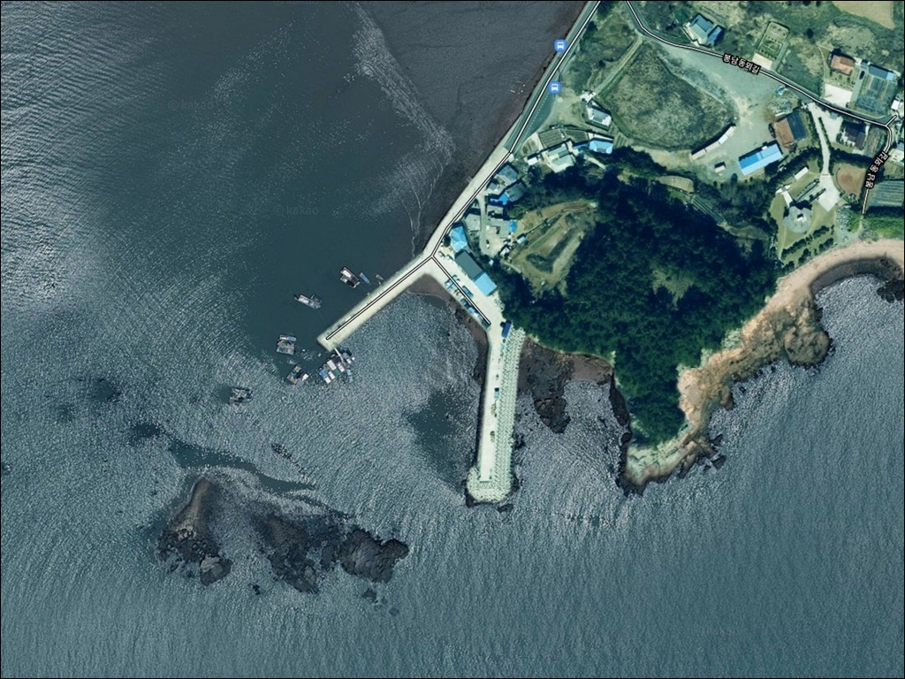
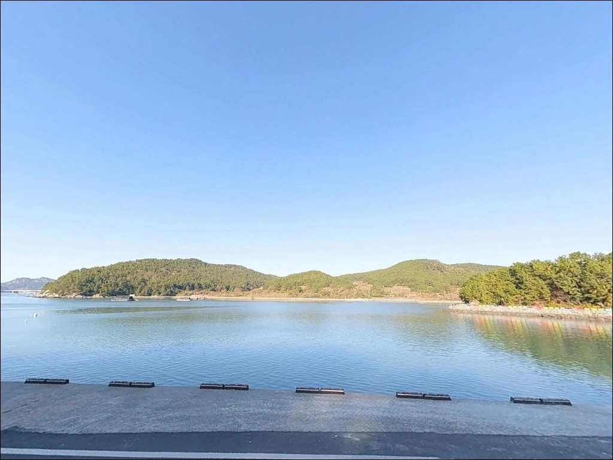
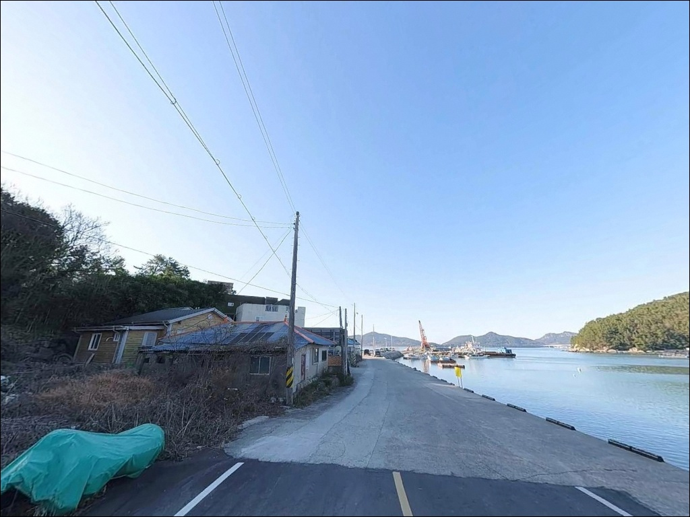
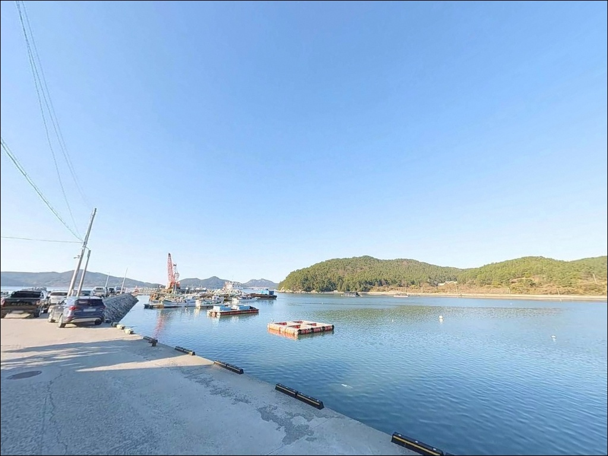
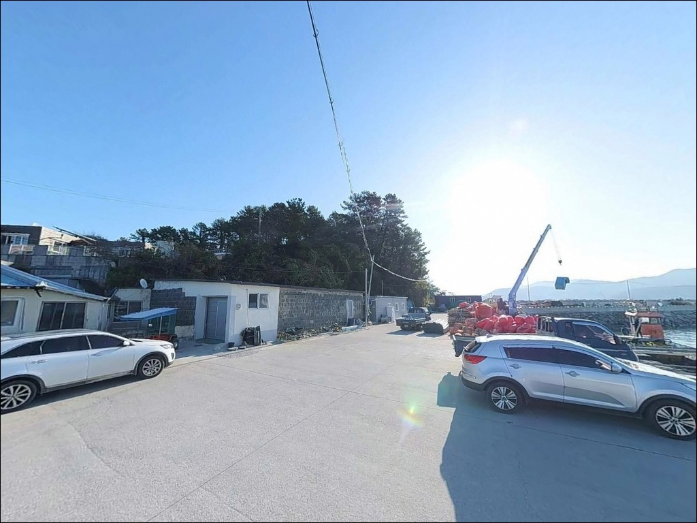
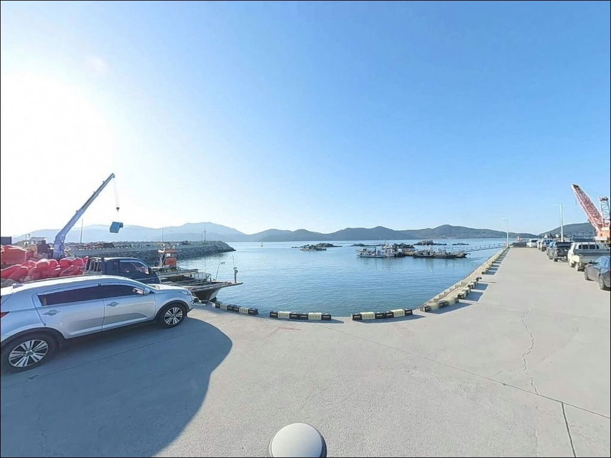
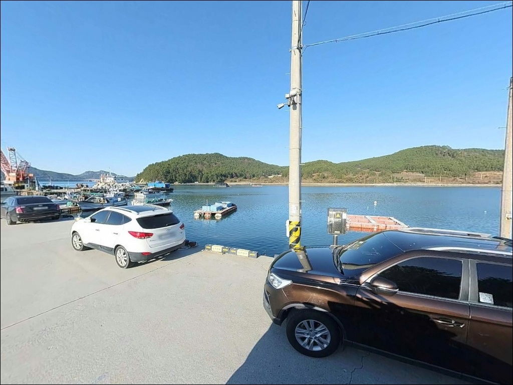
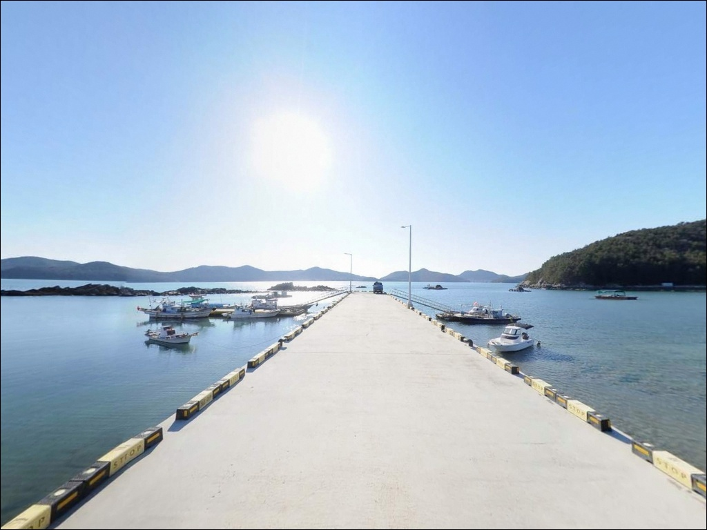
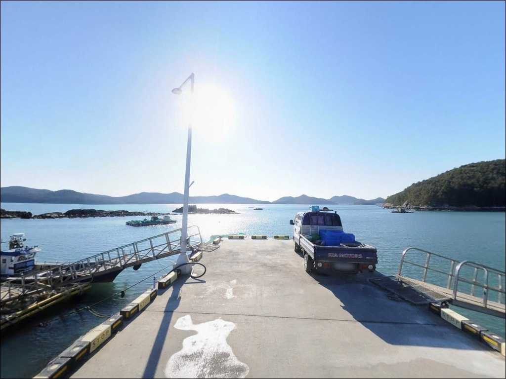

봉남항 방파제, 물때 모르면 조류에 채비 쓸려가는 이유


포인트 안내
봉남항
전남 고흥군 동일면 봉영리 618-2
수로 지형에 면한 방파제 포인트에서
물때를 무시하고 들어서면
채비 컨트롤 자체가 어려워지는 상황이 반복됩니다.
봉남항 외항은 조류가 빠르게 흐르는 구간으로,
물때 타이밍이 낚시 결과를 결정하는
포인트입니다.
전남 고흥군 동일면 봉영리에 자리한 봉남항은
L자형 방파제와 내항 선착장으로 구성된
지방어항입니다.
외항 방향은 수심 6~9m 권을 유지하며,
방파제 꺾임 지점 외항 석축 주변은
에깅·원투·찌낚시 세 가지 방식을 모두 운용할 수 있는
구조 조건을 갖추고 있습니다.
이 글은 봉남항의 진입 환경, 지형 기반 낚시 여건,
차박 체류 조건에 집중합니다.
조황 단정이나 특정 어종 보장은
이 글의 범위에 포함되지 않습니다.

1. 진입 동선과 포인트 접근성
봉남항까지의 진입로는 동일면 소재지를 거쳐
전 구간 포장도로로 연결되어 있습니다.
마을 안길을 통과하는 구간이 포함되지만
도로 폭이 안정적으로 확보되어 있어
승용차뿐 아니라 캠핑카 진입도 무리 없는
수준입니다.
항 내부에는 차량 회차가 가능한 공간이 확보되어 있으며,
방파제 입구와 내항 사이 평탄한 콘크리트 부지는
10대 이상 주차가 가능한 규모입니다.
대형 차량도 회차에 어려움이 없는 여유가 있어
장비를 많이 싣고 오는 낚시인에게도
접근성이 좋은 편입니다.
낚시 자리인 방파제 끝단과 주차 부지 사이 거리는
20m 이내로 가깝습니다.
장비를 내리고 포인트로 이동하는 동선이
짧아 체력 소모 없이
바로 채비 준비에 집중할 수 있습니다.

2. 차박 환경과 야간 체류 여건
봉남항 주차 부지는 항만 가로등이 상시 가동되어
야간 취사와 채비 준비에 필요한
기본 조명이 확보되어 있습니다.
다만 낚시 포인트인 방파제 끝단으로 갈수록
조명이 줄어드는 구조라
개인 헤드랜턴은 반드시 챙겨야 합니다.
주차 부지에 가로로 차를 세우면
차 안에서 바다 방향 조망이 가능하며,
낚시 자리와의 거리가 가까워
장비 이동이 편리한 차박 배치입니다.
민가가 항을 둘러싸고 있는 구조라
완전한 프라이버시보다는 생활권 인접 포인트의
성격이 강한 편입니다.
외항 방향으로 노출이 있어
기상 악화 시 바람 영향을 직접 받는 구조입니다.
남해안 특성상 돌풍과 너울성 파도가
수시로 발생할 수 있으므로
출발 전 해상 기상 예보 확인이 우선입니다.


3. 주변 편의시설 및 인프라 현황
봉남항 인근 봉영리 마을에는
식당과 카페가 일부 운영되고 있어
기본적인 식사와 휴식 인프라를 갖추고 있습니다.
동일면 소재지 방향으로 차량 5~10분 이동하면
편의점과 소형 마트를 이용할 수 있습니다.
동일면 소재지에는 우체국과 보건소도 있어
응급 상황 발생 시 기본 대응이 가능합니다.
반경 10km 내에는 외나로도 나로도항 일대가 있어
수산물 구매, 낚시용품 보급,
응급 시 의료 시설 접근도 가능한 위치입니다.

4. 물때 모르고 가면 낚시 자리가 사라지는 이유
봉남항은 수로 지형에 면한 구조상
물때에 따른 조류 흐름이 매우 빠르고 명확합니다.
만조 시에는 조류가 강해져
채비를 원하는 방향으로 운용하기 어려워집니다.
바다타임에서 봉영리 기준 물때를 확인하고
조류가 흐르되 너무 세지 않는 타이밍을
잡는 것이 기본 전략입니다.
방파제 외항 테트라포트는 이끼로 미끄럽습니다.
낚시용 안전화 착용은 필수이며,
방파제 끝단에서는 항상
구명조끼를 착용한 상태로 자리를 잡아야 합니다.
어구(그물, 통발)가 적치된 구역에는
주차를 피하고 어선 통행 동선에 채비를
던지지 않는 것이 기본 매너입니다.
암반 기반 지형 특성상 바닥 걸림이 발생하는
구간도 있습니다.
여분 채비를 넉넉히 준비하고,
출조 전 봉남항 조황과 기상 예보를 함께 검색해
현장 상황을 사전에 파악하는 편이 좋습니다.

5. 지형 기반 낚시 여건 분석
봉남항의 핵심은 L자형으로 꺾인 방파제 구조입니다.
외항 방향 석축과 테트라포트가 혼재된 외벽은
수중여와 사니질 바닥이 섞인 지형을
전방에 품고 있습니다.
수심은 외항 기준 6~9m 권을 유지하며,
방파제 꺾임 지점 전후로 조류가
집중되는 구간이 형성됩니다.
방파제 끝단은 외해 방향 수심 급변 구간과
바로 맞닿아 있어
채비 하강이 빠르고 바닥 변화가 뚜렷합니다.
이 구간에서는 루어 반응이 살아나는 시간대와
원투 채비가 안정적으로 착지하는
수심 조건이 동시에 확보됩니다.
내항은 수면이 안정적이지만
낚시 효율은 외항 대비 낮은 구조입니다.
선박 정박 위주의 공간이라
내항보다는 외항 직벽 라인과 끝단을 우선으로
탐색하는 것이 이 포인트의 공략 원칙입니다.
최신 조황은 출조 전에 반드시 검색해 보시기 바랍니다.


6. 봉남항 지형에 어울리는 낚시 스타일
원투낚시는 이 포인트에서 가장 기본이 되는 방식입니다.
외항 정면과 대각선 방향으로 투척하면
사니질 바닥이 형성된 구간에 채비가
자연스럽게 안착합니다.
바닥 걸림이 심하지 않은 구간이 있어
초보자도 운영하기 수월한 편입니다.
도다리, 보리멸, 붕장어 등
바닥 어종을 기대해 볼 수 있는 조건입니다.
에깅은 방파제 끝단보다
꺾임 지점 외항 석축 주변에서
반응이 먼저 오는 경향이 있습니다.
가을 시즌에는 주꾸미와 갑오징어가
이 해역을 회유하며,
석축 경계선을 따라 에기를 흘리는 방식이
이 포인트 구조에 잘 맞습니다.
찌낚시는 조류가 흐르는 물때에
방파제 끝단에서 외해 방향으로
채비를 흘리는 방식이 효과적입니다.
가을철에는 감성돔과 학꽁치 낚시가
이 해역에서 성행하며,
릴찌 채비로 조류를 태우는 방식이
외항 직벽 라인과 잘 어울립니다.

7. 대안 포인트와 플랜 B 동선
봉남항 여건이 기대에 못 미칠 때
첫 번째 대안은 외나로도 나로도항입니다.
봉남항에서 약 5km 거리에 위치하며
고흥권 최대 규모 포인트로
방파제 규모와 낚시 접근성이 안정적입니다.
주변에 편의시설과 식당이 집결해 있어
베이스캠프 역할도 함께 수행할 수 있습니다.
나로도항이 부담스럽거나 이미 사람이 많다면
내나로도 덕흥항이 차선입니다.
봉남항에서 차량으로 15분 내외 거리이며,
방파제와 갯바위를 겸비한 구조입니다.
같은 나로도 해역 패턴을 공유하고 있어
어종 구성도 유사한 편입니다.
차박 보조 후보로는
덕흥해수욕장 인근 주차장을 검토할 수 있습니다.
소나무 숲과 인접해 있어 주차 여건이
봉남항보다 넓고 조용한 환경을 기대할 수 있습니다.
나로대교 주변 도로변 평탄 구간도
접근로가 넓고 회차가 용이해
긴급 대피성 차박 후보로 활용됩니다.

물때를 맞추면
봉남항 방파제가 달라집니다
원투낚시와 에깅을 함께 운용하고 싶은 낚시인,
또는 차를 바다 가까이 붙이고
장비 이동 없이 바로 채비를 펼치고 싶은 분이라면
봉남항의 구조 조건은 잘 맞는 편입니다.
주차 여건이 넉넉하고 진입로도 안정적이라
첫 방문이라도 현장에서 헤매는 일이
적은 포인트입니다.
다만 수로 지형 특성상 만조 전후 조류가 강해지므로,
물때 계산 없이 사리 전후에 도착하면
어떤 채비로도 원하는 라인을 지키기 어렵습니다.
바다타임으로 봉영리 물때를 미리 확인하고,
조류가 살아 있되 세지 않은 타이밍에
방파제 끝단과 꺾임 지점을 노리는 것이
이 포인트를 제대로 쓰는 방법입니다.
항내 가로등과 넓은 주차 부지가 갖춰진 봉남항은
낚시를 마치고 차 안에서 하룻밤 조용히 쉬어가기에도
나쁘지 않은 조건입니다.
물때 한 번 맞춰 방파제 외항에 자리를 깔고,
나로도 해역의 조류를 직접 느껴볼 수 있는
출조가 됩니다.